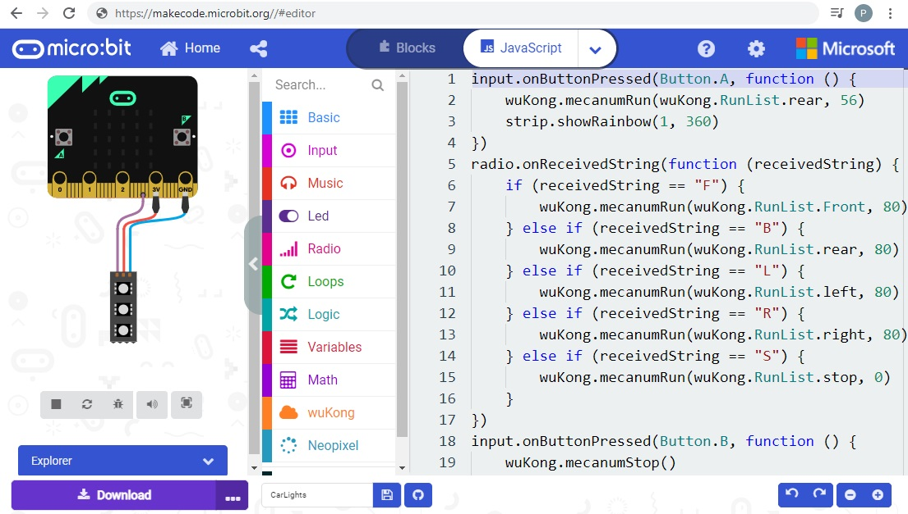

BCC Robotics Documentation yo
Development Environment
Microbit devices are programmed using a web-browser online at site: https://makecode.microbit.org/
Your project will be saved online. You can create a blockly project by pasting javascript into the javascript tab:

Software